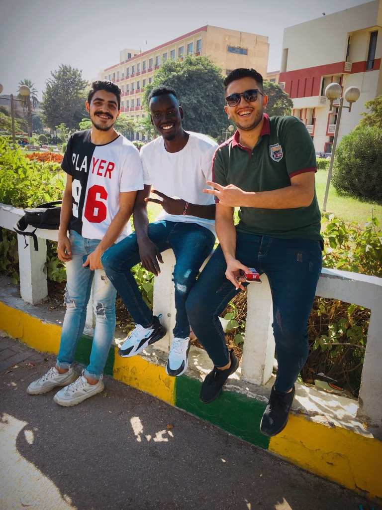
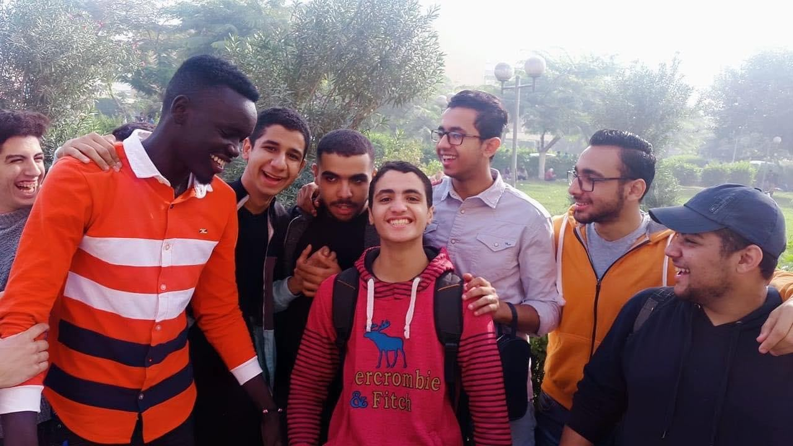

NOV 23, 2025 — PRESENT
Software Developer
CardoO Technology
Software Developer at CardoO Technology since November 2025.
Software Developer · Computer Science Student
Software Developer at CardoO Technology and Computer Science student at Ain Shams University in Cairo.
01 / Professional profile
I’m Tap Kuol Hoth Nguet, a software developer from Guit, Unity State, South Sudan. I work at CardoO Technology while pursuing a bachelor’s degree in computer science at Ain Shams University in Cairo.
From February 2022 to March 2023, I served as chairman of the Jikany Community in Egypt, contributing to community activities and leadership in Cairo.


02 / Career & education
Software development, community leadership, and computer science studies.
NOV 23, 2025 — PRESENT
CardoO Technology
Software Developer at CardoO Technology since November 2025.
FEB 2022 — MAR 2023
Jikany Community in Egypt
Led the Jikany Community in Egypt and contributed to community activities during my term.
IN PROGRESS
Ain Shams University, Faculty of Computer and Information Science · Cairo, Egypt
Bachelor’s degree in progress.
03 / Contact
For professional inquiries, software development opportunities, or community collaboration, please get in touch.
Cairo, Egypt